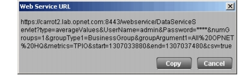

URLs from the Desktop Console AppResponse can automatically generate the Web Services URL that will request the data displayed in a specific table, chart, or alert log. This approach can be faster than constructing a URL from scratch and is sometimes more convenient than customizing an existing URL. To view these URLs, make sure that the “Display web services URL menu in tables and charts” preference is enabled. You can find this preference under Tools > Preferences > Web Service. Viewing URLs in the Desktop Console Use the following procedure to generate a Web Services URL in the Desktop Console. Procedure 1 Generating a URL in the Desktop Console 1. Open a table, chart, or alert log that contains the information of interest. 2. Select the information of interest: • In a table, click on a metric cell. • In a multi-group chart, click on a business group in the legend. 3. Right-click on the table or chart. A pop-up menu appears. 4. Select the Web Service URL item. • In some cases, this item has a submenu that further defines the desired URL. • In some cases (such as Alert Logs), the submenu items vary depending on which table row you clicked on. The Web Service URL is displayed in a dialog box. Figure 1 Web Service URL Dialog Box  5. Click Copy to copy the URL to your clipboard for use in another application, or click Cancel to close the dialog box. End of Procedure 1